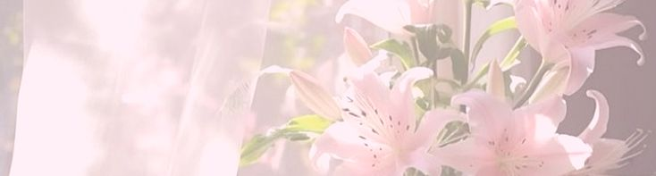

Selamat Datang di Toko SHES Strap! 💕
Selamat datang di toko resmi kami! Di SHES Strap, semua produk gantungan handphone (phone strap) kami buat secara 100% buatan tangan sendiri (handmade) dengan bahan manik-manik pilihan yang aesthetic, kuat, dan kekinian.
Keunggulan Produk Kami:
- 100% Buatan Tangan Sendiri (Handmade) dengan ketelitian tinggi.
- Menggunakan tali & manik-manik pilihan yang awet dan cantik.
- Tersedia berbagai varian warna aesthetic: Putih, Ungu, Pink, dan Biru.
✨ Catatan Penting: Website interaktif ini dirancang dan dibuat khusus untuk memenuhi penilaian nilai Tugas Asesmen Sumatif Akhir Semester (ASAS) Mata Pelajaran Informatika.
📌 Sumber Inspirasi Desain & Gambar: Pinterest & Karya Buatan Sendiri (Homemade).